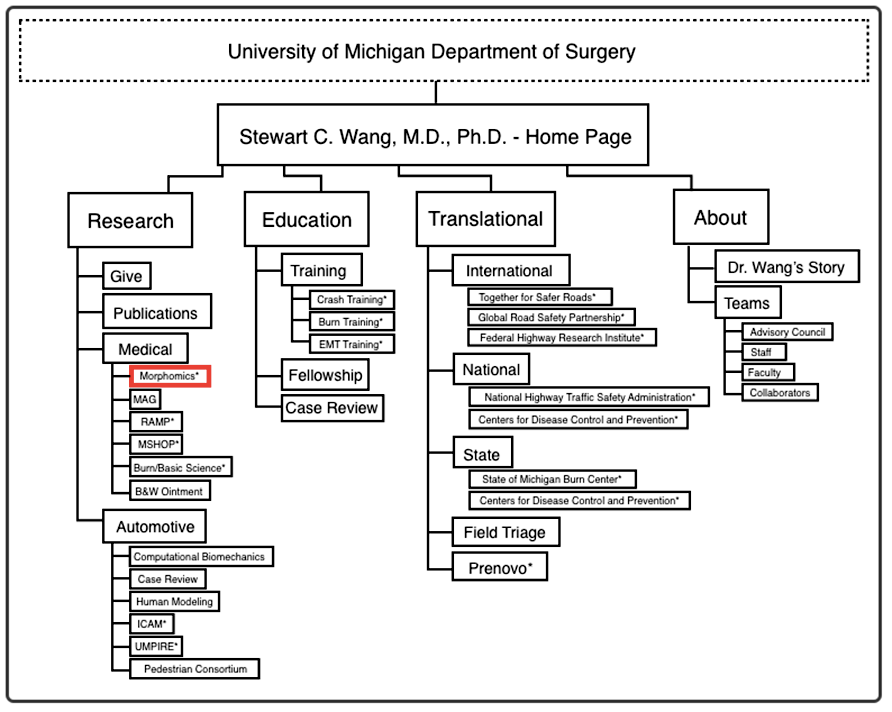
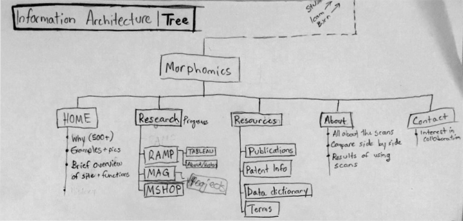
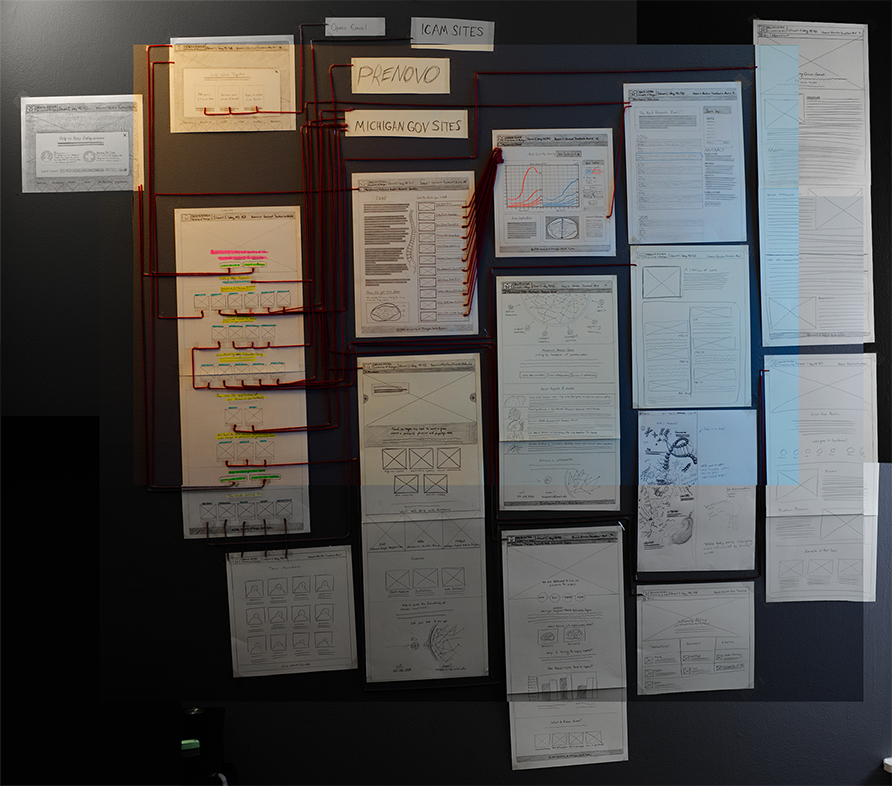
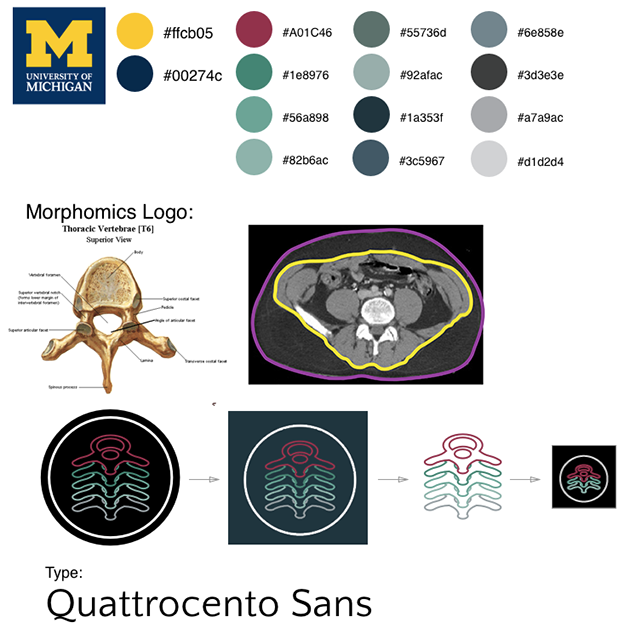
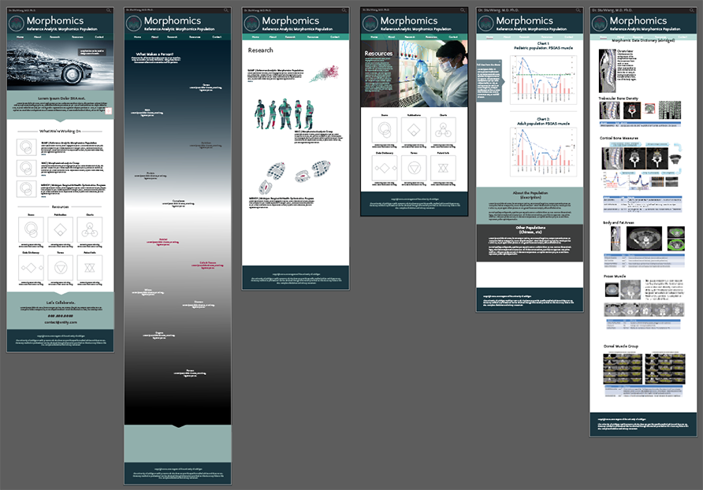
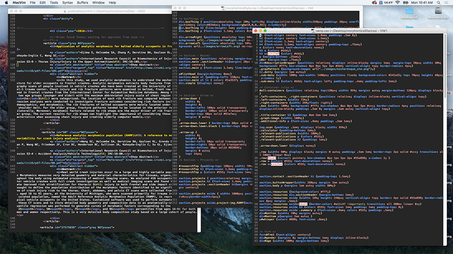
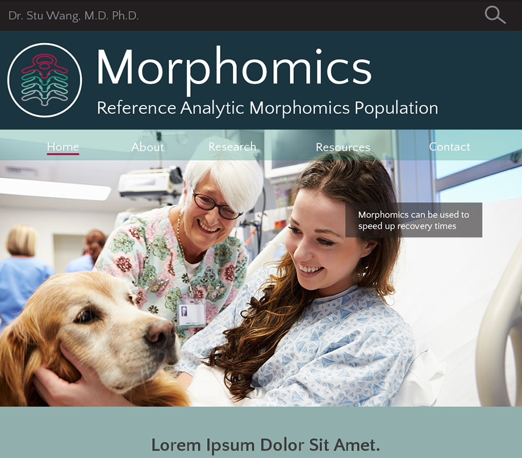
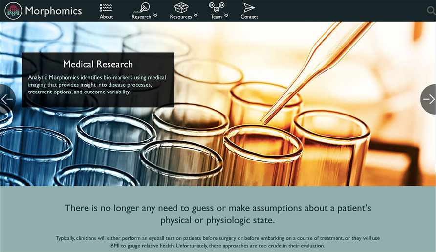
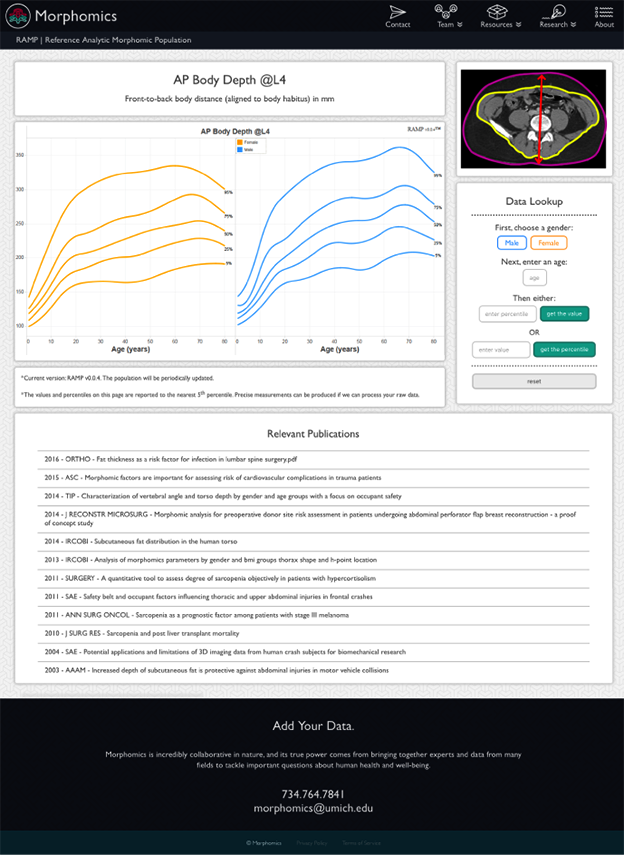
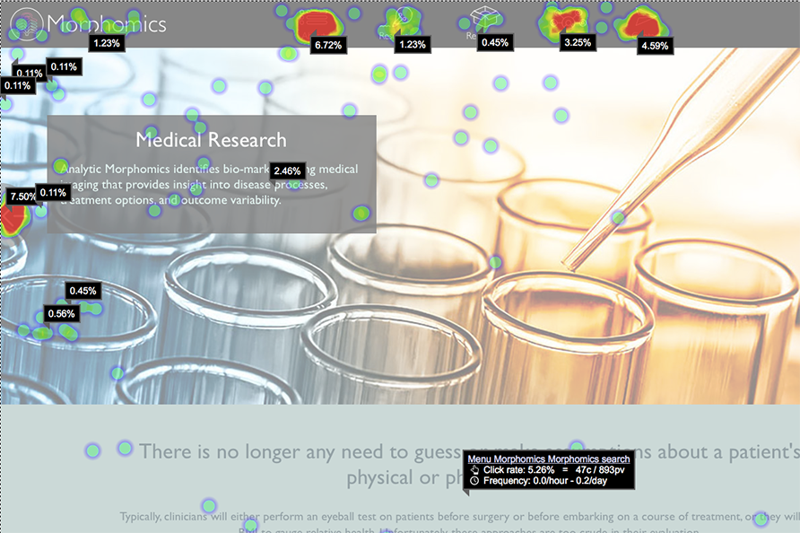

This project was for an organization nested within the University of Michigan's Department of Surgery. I designed and developed this over the course of one year with the occasional assistance of a content writer.
For the curious, here's a pic of my information architecture for organizing the entire department, but today I'm just going to show you how I designed and developed the Morphomics site.
To create the Morphomics site, there were a few exciting challenges that required me to turn up my problem-solving game:
These challenges made this project difficult, but not impossible.
To get to the value of Morphomics, I asked Dr. Wang (the head of the department) what types of problems his Morphomics research solved. He had quite a few answers, but I'll list three here to give you the gist:
All of these solutions help solve a common problem: Current medical and engineering practices are based on one type of human body (the 6'0 180lb male) and a lot of guesswork. This results in a needless loss of life.
Morphomics solves this problem by showing us the exact body measures and variability in a population. This removes guessing and allows precise treatment for specific body types which saves time, money, and lowers risks for patients.
I began asking around the department WHO would want to learn about Morphomics and WHY. My notes are to the left.
My idea was to organize the information based on cross-referencing the content we had with our audience's needs. I worked with members of our department who interacted directly with our audience to get this data.
From making this cross-sectional table, I learned that the most in-demand piece of information we could offer to our Morphomics audience were the CT scans of trauma patients (highlighted in pink to the left). I learned later through user testing that what they actually wanted was the data from the CT scans, not the scans themselves.
Later I organized all of my audience research into this neat table.
| type | industry | age range | browser | goals |
|---|---|---|---|---|
| Researchers | medical, automotive, biomedical | 35-45 | chrome, safari | Find data and publications that will further their own research |
| Medical Students | medical, automotive, biomedical | 21-40 | chrome, safari, firefox | Learning about precision medicine, combining data with scans |
| Surgeons | Medical | 35-65 | chrome, ie, safari | To collaborate with us, combine their research with ours |
| Hospital Policymakers | Medical | 35-55 | ie, chrome, safari | To find out how to reduce costs and patient post-op hospital bed time |
| Patients | Any | 50+ | ie, safari, chrome, firefox | To find out how to reduce their risks for an upcoming surgery |
| Pharmaceutical Companies | Pharmaceutical Research | 35-55 | ie, chrome | Interested in precision medicine research that will make drugs more effective |
| Device Manufacturers | Biomedical | 26-42 | chrome, safari, ie | How to reduce complication when a device is installed, how to save on cost of device |
| Auto Designers | Automotive | 30-60 | safari, chrome, firefox | Design safety measures to save the most lives accounting for bodily differences |
| Auto Engineers | Automotive | 35-65 | chrome, ie | Acceleration/force of different body types, also how to collaborate with us in Case Review |
| Triage, EMT | Medical, Government | 22-40 | chrome, ie | Need to look at our policy pdf for emergency responders |
| Government Policymakers | Government | 40-65 | ie, chrome | Need to look at our policy pdf for emergency responders |
| Government Grant Personnel | Government | 40-65 | ie, chrome | Looking for the best way to prevent injury and investing resources into that. |
I worked with Dr. Wang (the department head), June (the project manager) and Kristen (the content writer) to get this nailed down. Together we went over everything a user would want out of Morphomics.
I sorted all of the "content chunks" that we came up with into five groups, which you can see to the left. This later became the menu system for the site.
This was my very first mockup of the home page.
My plan was to have a JavaScript slideshow front and center that changed images every couple of seconds, each with its own Morphomics use case. The idea was to give a snapshot of the value of this research, even if the user only stayed on this page for a few seconds.
Right underneath that, I thought we'd describe what Morphomics actually is, in order to educate curious new users.
Then I listed the three projects that were spawned from Morphomics -- RAMP (Reference Analytic Morphomics Population), MAG (Morphomics Analysis Group), and MSHOP (Michigan Surgical and Health Optimization Program).
I followed that with the Resources section, which I assumed would be useful to a user who just wanted a snapshot of what we offer.
Then finally, the call to action: Let's Collaborate. This is what the department wanted from medical and auto audiences -- their biometrics data.
Below you can see how I created a low-fidelity mockup for the entire information architecture. You can see a more fleshed out version of the Morphomics homepage is at the bottom-center.
I mapped out user journeys with red thread to find out which pages would be viewed the most, and thus, which ones I needed to spend the most time on.
The challenge here was that I was anchored with University of Michigan branding, so I had to make sure whatever colors I chose fit in with maize, blue, and the block M.
I chose this color pallet because I noticed the dull blue/green in a lot of medical microscopy. Perfect for a precision medicine site, or so I thought.
I created the Morphomics logo based on a constant in all of our CT scans -- the vertebrae. Traced and abstracted, it even forms a vague "M."
Our department gets its data is by examining CT scans in a spinal stack, so I stacked the simplified vertebrae M shapes on top of each other to create a meaningful logo.
I combined the information architecture, low fidelity mockup, and branding to create a high-fidelity mockup in Illustrator. 
A snapshot of my early html and css. Don’t look at it too long, your eyes might burn out.
At the time, I was still a beginner when it came to web development, so I made (and later fixed) a lot of mistakes with this site, including:
The list could go on and on. Just know that after a few weeks in this quagmire, I fixed all of these, and made it work how I intended across all modern browsers and device sizes (even IE11 on the hospital's core-imaged machines).
My first prototype ended up looking like this:
I pushed it to my Raspberry Pi and then shared the link with various users in our department: med students, researchers, and surgeons. They gave me valuable feedback, including:
And then I showed it to Dr. Wang. I had a hover effect on the buttons that changed them from a subtle green to a bright red. He clicked around for a few minutes, and I noticed that he wasn’t getting the visual cue from hovering over the buttons.
"What color is this?" he asked.
"Red." I answered
"Oh! I can't see that. I'm red/green colorblind!"
After that, I found out that It's highly common for surgeons to be red/green colorblind. And surgeons were a major part of my audience, so I needed to rework the branding.
I chose analogous colors to the required maize and blue, incorporating orange, greens, a bright blue, and a slight purple/periwinkle color.
(note: It was okay to include green, as long as I didn’t put it against a red.)
I chose to replace Quattrocento Sans because I noticed that some users had to squint to read the longer paragraphs.
Gill Sans was a much more effective type for this site because even though it’s technically a sans-serif font, it still has a very slight serif, which helps when reading body text. The rounded letters and high x-height were also appealing for smaller font sizes.
Based on the user feedback, I made the menu smaller and added some icons to it. I also made the value statement above the page fold.
I applied this new branding to our Morphomics data pages (one of which you see below) and gave that series of pages a clean, Knolling look.
It was important that these data pages received the most design attention because according to Google Analytics, they were the most visited pages on the entire site.
I wrote some JavaScript that lets the user interact with the form on this page to find the values from the chart on the left. Each Data Lookup calculator runs on a different set of values depending on which measure the user chooses (AP Body Depth @L4, Trabecular BMD @T10, etc). This makes interacting with our data very easy for researchers.
After I updated the branding on Morphomics, I installed a Heatmap plugin to see how effective it was and where exactly my users were clicking. I let it run for about a month.
This data told me a few things:
The homepage was doing its job; it was getting their attention and making them curious.